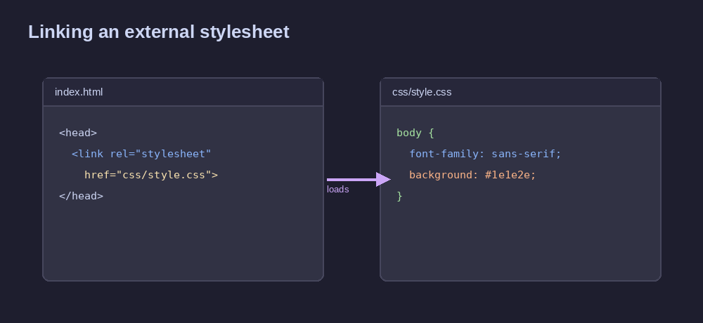
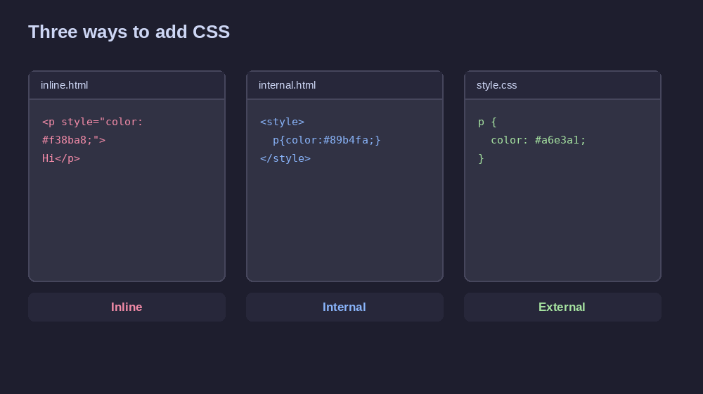
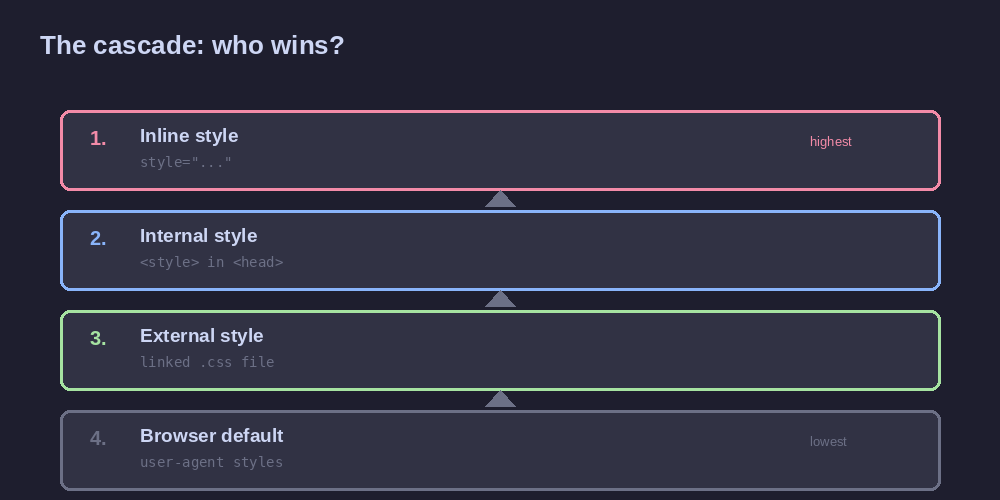

External Style Sheet
An external style sheet is a separate .css file that holds all your styling rules, linked into an HTML page with a single <link> tag. It's the setup used by almost every real website, including this one.
index.html
<head>
<link rel="stylesheet"
href="css/style.css">
</head>
css/style.css
nav {
display: flex;
gap: 16px;
}

How to set it up
- Create a .css file Make a new file such as style.css, usually kept in its own css/ folder next to your HTML pages.
- Write your rules there Every rule follows the same shape: a selector, then declarations in curly braces — no <style> tags needed in this file.
- Link it from the HTML head Add <link rel="stylesheet" href="css/style.css"> inside <head>. The path in href must match where the file actually lives.

Inline vs internal vs external
All three ways to write CSS produce the same result on screen, but they differ in where the code lives and how easy it is to reuse.
| Method | Where it's written | Applies to | Best for |
|---|---|---|---|
| Inline | style attribute | One element | Quick one-off tests |
| Internal | <style> block in <head> | One page | Single-page demos |
| External ✓ | Separate .css file | Every linked page | Real websites |
